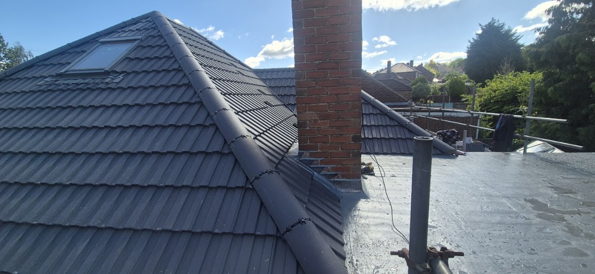
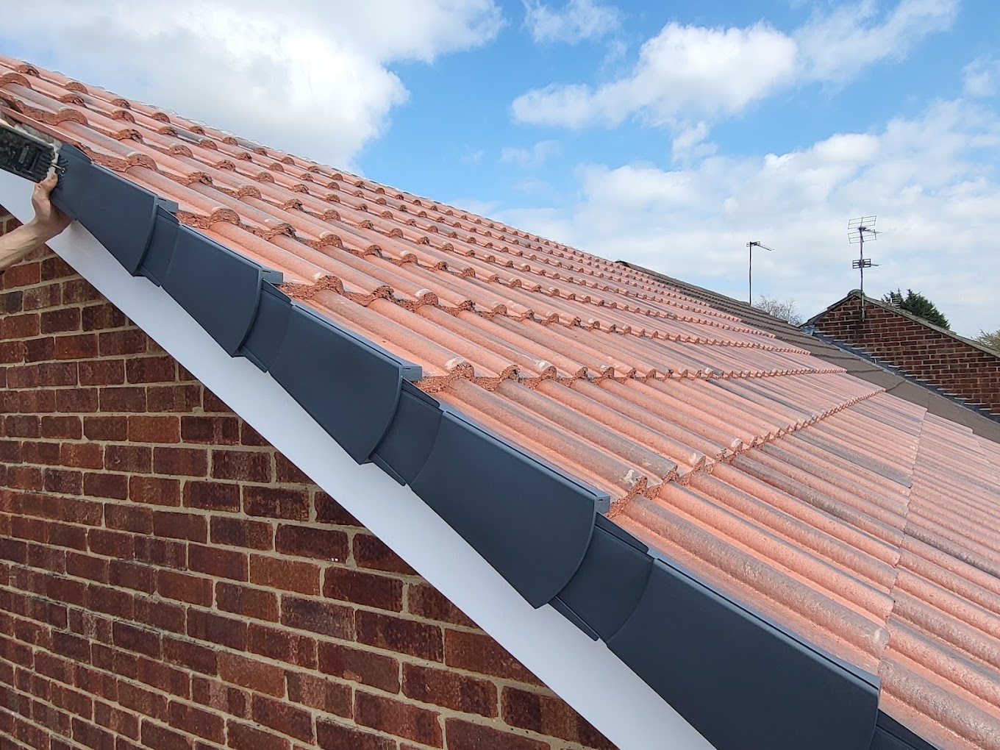
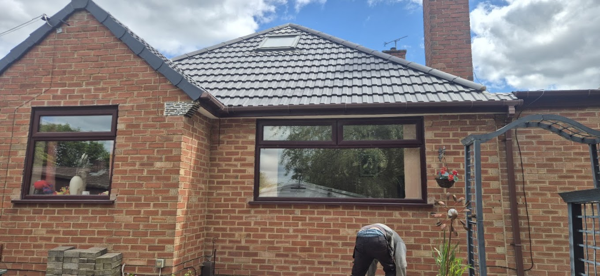
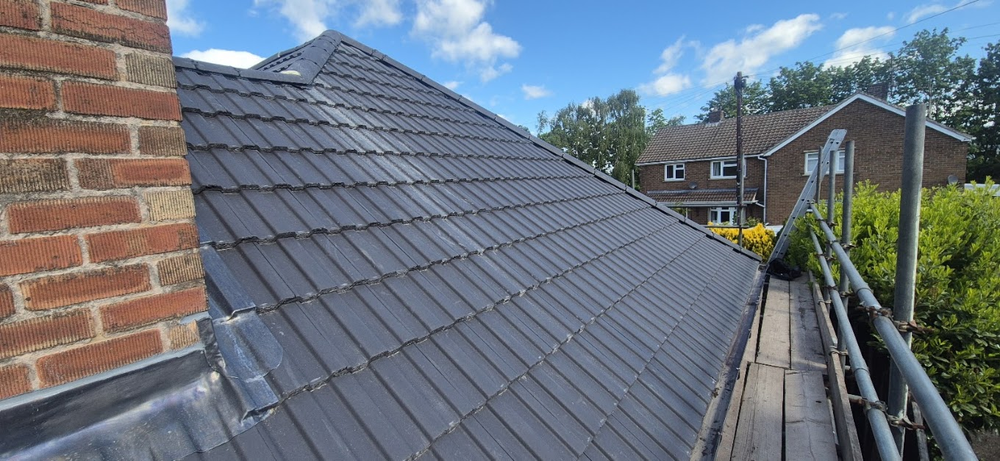
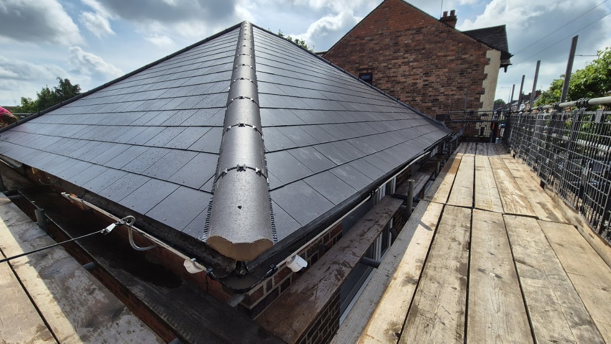
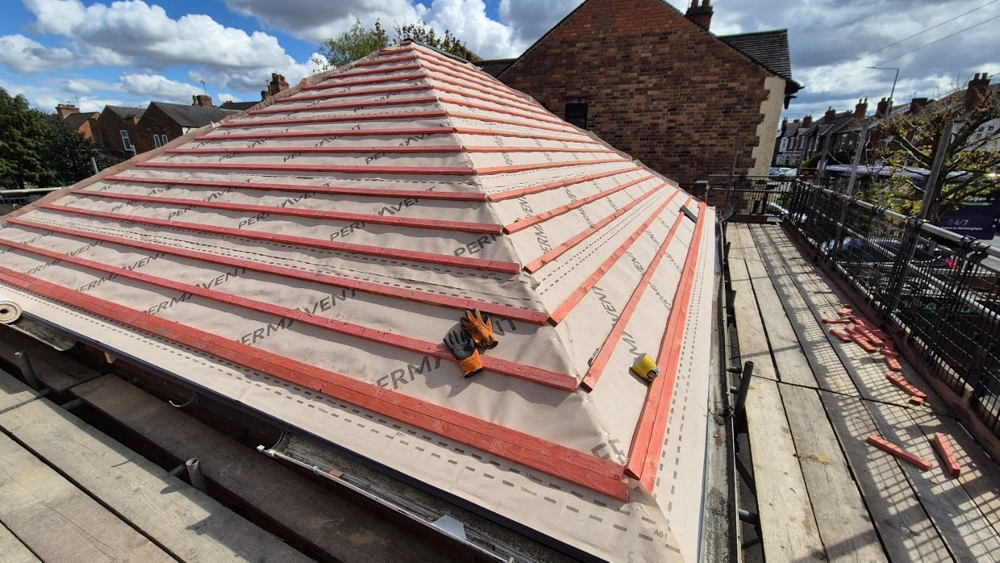

New Roofs
Complete roof installations using proven materials and modern roofing systems.

Trusted local roofers in Derby
Roof repairs, complete re-roofs and new roof installations delivered with honest pricing, reliable workmanship and respect for your home.
Roofing done properly
From a slipped tile to a complete new roof, Acorn Quality Roofing provides practical advice and professional results across Derby.
Customers repeatedly praise Dave and the team for arriving when promised, sticking to quotes and leaving every job tidy.
Featured project
A complete re-roof completed with modern breathable membrane, treated battens, new tiles and a dry ridge system.


What we do
Straightforward advice and dependable workmanship, whether you need a small repair or a full roof replacement.
Complete roof installations using proven materials and modern roofing systems.
Careful removal and replacement of tired roofs for long-term protection.
Leaks, storm damage, slipped tiles and urgent roofing faults diagnosed and repaired.
Secure, low-maintenance ridge and verge systems designed for British weather.
Durable flat-roof solutions for extensions, garages and outbuildings.
Fascias, soffits, gutters and related roofline improvements and repairs.
Recent work
A closer look at completed installations and the detail that goes into every project.



Customer feedback
★★★★★“Can’t praise them highly enough. Came when they said they would, did an excellent job and tidied up after. Stuck to their quote too.”
★★★★★“Acorn Quality Roofing provided a very professional service, fitting a dry ridge roof system at a fair price and in a timely manner.”
★★★★★“Top bloke and his workers were always polite and extremely professional.”
Local roofing specialists
Based in Oakwood and covering homes throughout Derby and nearby communities.
Free, no-obligation quotations
Speak directly with Dave about your roof and arrange a free quotation.